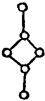
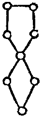

大正新脩大藏經 第21冊
No.1311 梵天火羅九曜 (1卷)
【】
第 1 卷
No. 1311
梵天火羅九曜
一羅睺蝕神星明曰。
唵囉戶曩阿素(三合)囉邏惹野塞麻捨覩野曩(名位)扇底伽哩莎婆訶
羅睺星以錢供養口決云向丑寅供之。年一十十九二十八三十七四十六五十五六十四七十三八十二九十一并大凶。
行年至此宿者凶。星隱而不見。一名羅睺。一名羅師。一名黃幡。一名火陽。臨人本命。憂官失位。重病相纏。財物破散喪服愁口舌。國王以神不祭至此宿修福攘之。元神錢畫所犯神形供養大吉云云(人命屬大清天。此年百事如意。所求必得。行來出入皆大吉利)。
二中宮土宿星(王在四季)鷄緩 真言。
歸命唵贊日利曳娑婆賀
又真言曰。
唵捨泥殺作(二合)羅曩乞殺(二合)怛囉(二合)跛羅(二合)訶曩嚕娑野(名位)普瑟底(二合)迦哩娑縛(二合)賀
又真言。
唵戍戍羯囉誐馱嚩(二合)囉嚩(二合)邏嚩(二合)邏若(名位)室哩娑婆(二合)賀
春巽夏坤秋乾冬艮 季夏月菓子一盤祭之 口決云其方不定。春季向巽餘以次知之。年二十一二十二十九三十八四十七五十六六十五七十四八十三九十二并大凶。
行年至此宿者是中宮土星。其星周九十里屬楚國之分。其宿最凶。偏臨宮之然及遮人此宿貞慎疾病牢獄。君子重厄之年號曰土星。不欲犯之。其形如波羅門。牛冠首手持錫杖。與為禍國王以季夏月菓子一槃祭之。宜送本命元神錢。畫所犯神形供養。黃衣攘之。必消災增福壽命本命。屬赤虛天百事不如意。男不宜官女不宜夫。忌三月九月庚辛日。
三嘀北辰星(水星王在冬三月)明曰。
又明曰。
唵母馱曩乞殺(二合)娑嚩(二合)弭曩(名位)契努(二合)摩莎縛(二合)賀
又心呪曰。
唵蘇底哩(二合)瑟吒莎婆訶
以中夏之月用油祭向北方供之年三十二二十一三十三十九四十八五十七六十六七十五八十四九十三少吉。
行年至此宿名北辰。一名毚星一名滴星。周迴一百里屬燕趙之分野。若臨人本命。主陰愁口舌盜賊牽喚。其神狀婦人。頭首戴猿冠手持紙筆。國王以仲夏之月用油祭。宜醮北斗穰之。數此十二宮。從生月下一宿為一日。左數至生日止即知也云云。已行無(異本)人命屬遊咸天百事不成。男不宜官女不宜夫。忌四月丙戌日。
四西方大白星(金星金神也王在秋三月)明曰。
歸命唵吠尾毘娑婆訶
又真言曰。
常以仲秋之月用生錢祭之向。西方供之年四十三二十二三十一四十四十九五十八六十七七十六八十五九十四少凶。
行年至那頡■。是太白星西方金精也。其星一名大白。一名長庚。一名那頡。其星周迴一百里屬秦國之分野。若臨人年本命。至有哭泣刀兵。形如女人。頭戴首冠。白練衣彈絃。與人為患。國王常以仲秋之月用生錢祭之。行年至此星。宜著白衣醮謝本命元神作福田。大吉也。人命屬飛揰天百事皆吉憂解患。男財宜官婦子相係。治生萬倍。
五大陽密日星真言曰。
曩謨羅怛曩(二合)怛羅夜(引)野曩莫素哩野薩縛曩乞羅(二合)怛囉(二合)羅惹野唵阿謨伽寫(名位)設底(去)莎婆訶
以冬至之日用眾寶祭之。向卯辰供之年五十四二十三三十二四十一五十五十九六十八七十七八十六九十五大吉。
行年至此宿者。主大陽屬日。其星周迴一千五百里。一日一周天。若臨人本命。加官進祿有喜事。常得貴人接引。所作通達。國王以冬至之日用眾寶祭之大吉矣 此星真言不可思議。若至心帶佩并供養一年。非橫不死云云。人命屬通光■百事如意。天神相保終無實難。所向開通福祿自至。
六南方火熒惑星(火王在夏三月)火星真言曰。
歸命唵摩訶利多莎婆訶
又真言曰。
唵阿誐羅迦嚕儗野(名位)娑婆(二合)賀
以仲夏之月火祭之。向南方供之。年六十五二十四三十三四十二五十一六十六十九七十八八十七九十六並是凶年也。
行年至此星。一名南方熒惑星。一名四利星。一名虛漢。其星周迴七十里。屬魏國之分。若臨人命。必生口舌。疾病相纏。神形如外道。首戴驢冠。四手兵器刀刃。國王以仲夏之月。用火祭之。行年至此者。君子臨福。職事進益。小人臨福。災害不生。敬之即無殃咎。人命屬雲霄。天神相保。不敢蘖禍。錢財滿盈。福祿廣至。雖有少憂。自解無苦。
七計都蝕神星明曰。
唵縛日羅(二合)計都曩(引)曩乞殺(二合)怛羅(二合)邏惹野(名位)吽
畫此形深室供養禳之。迴禍為福。向未申供之。羅睺帶珠寶。並日月計都著錦繡衣。年七十六二十五三十四四十三五十二六十一七十九八十八九十七並凶也。
行年至此計都亦是隱星。一名豹尾。一名大隱。首隱不見。不見而行無定形。若臨人名。官最多逼塞。求官不遂。務被遷移。官符相纏。多憂疾病。此星凶。國王不祭。
行年至此須送五道司命。畫此神形。深室供養禳之。迴禍作福。人命屬溫獨天。所向不如意。行■無利。夫婦哭泣。或夫流淚。忌五月六月甲乙日。
八暮大陰(月天)明曰。
唵戰(上)怛羅(二合)曩乞灑(二合引)怛羅(二合)邏惹野(名位)設底娑婆賀
常以夏至之日。眾寶玉及水祭之向申酉供之。年八十七二十六三十五四十四五十三六十二七十一八十八十九九十八。
行年至此宿位者。是太陰。也屬月。其月周迴一千五百里。一日周迴天下。若臨人本命大吉。加官進祿所作通達。得貴人接引。長有喜慶之事。國王以夏至之日。用眾珍玉及水祭之。行年至此方。事通和求官得遂所作大吉。人命屬微供天千百事皆凶。遭病恐死田蠶不收憂縣官事。忌正月九月丙丁日。
九東方歲星(王在春三月)木星明曰。
曩謨三曼多沒馱喃唵印那羅野娑婆訶
唵婆羅(二合)訶薩鉢(二合)底曩摩地比跢縛曩(二合)野(名位)摩攞縛馱(二合)寧婆縛(二合)賀(引)
常以仲春月用眾寶祭之。向東供之。年九十八二十七三十六四十五五十四六十三七十二八十一九十九十九並是大吉。
行年至嗢沒斯者是歲星。東方木精。一名攝提。其星周迴一百里屬魯衛之分。臨人本命。加官進祿。萬事吉祥。其神形如卿相。著青衣。戴亥冠。手執華菓。國王常以仲春月。用眾寶祭之。
行年至此宿宜與貴人交通婚姻和合。此年■■大吉之事也。人命屬高倉天萬事皆諧。所向如意往來有利。居為平安子孫熾昌。
北斗七星明曰。
曩莫三曼多那羅那羅破左邏吽
九執明曰。
歸命唵蘖羅(二)醯涅嚩(二合)哩也(二合)鉢囉鉢多(二合)[歹*需]底囉摩野(三)娑婆(二合)賀
蝕神頭從正月至年終常居二宿翼宿張宿(羅)尾宿低宿(計)蝕神尾從正月至年終帶居此二宿(以上無異本)按聿斯經云。凡人只知有七曜不晴虛星號曰羅睺計都。此星在隱位而不見。逢日月即蝕。號曰蝕神。計都者蝕神之尾也。號豹尾。若行年到此宿。切須畫所犯神形。深室供養燒錢攘之。即災害不生。若遇惡星須攘之。諸不逆其所犯。即變凶成吉。不信即變吉成凶。遇吉星喜慶重重福德自在。遇惡星災害競生。王侯犯之即謫官降職。但以亥時面向北斗。至心祭拜本命星。切不得向北小便折人壽命。宜思真念善獲福宜財。若不穰之災害競起。
葛仙公禮北斗法
鎮上玄九北極北斗。從王侯及於士庶。盡皆屬北斗七星。常須敬重。當不逢橫禍凶惡之事。遍救世人之襄厄。得延年益算無諸災難。并本命元神至心供養。皆得[拚-ㄙ+云]遂人之命祿。災害殃咎迷塞澁。皆由不敬星像。不知有犯星辰。黯黯而行災難自然來至。攘之即大吉也。祭本命元神日。一年有六日。但至心本命日。用好紙剪隨年錢。用茶菓三疊淨床一鋪。焚香虔心面視北斗。再拜啟告曰。隔居少人好道求靈常見尊儀。本命日謹奉銀錢仙菓。供養於北斗辰星并本命神形。將長是生益壽無諸橫禍。神魂為安。元神自在。襄年凡■驅向遠方。再拜燒錢合掌供養。
┌○破軍星持大置(午生人)
○─○武曲星賓大東(巳未生人屬云云)
└○廉貞星不灌子(辰申生人)
└○文曲星微慧子(卯酉生人)
├○祿存星祿會(寅戌生人)
┌─┴○巨門星貞文子(亥丑生人)
○貪狼星司希子(子生人)
凡祿命書云云。
一切如來說破一切宿曜障吉祥真言
男忌天羅女忌地網欲知衰禍但在行年所犯無不知也 夫人行年吉少凶多乍可知而迴避不可坐受其災云若莫日 ■■。
梵天火羅圖一帖
敬白大梵天王帝釋天王。閻羅天子五道大神。太山府君司命司祿。十二宮神七曜九執。二十八宿藥叉藥叉女。毘舍遮毘舍支步多那天等。殊別當所鎮守護法善神。若家內守宅諸大小神等。并三千大千世界不可說不可說微塵剎土六道四生類。某甲願今月吉日良時。設神供無遮供具。其大志者可知心云云。
次勸請 向東方合掌 已上畢。
(已下表紙袖書也今此記之)。
一(羅睺大惡)二(土少惡)三(水中吉)四(金中吉)五(日大吉)六(火少惡)七(計大吉)八(月中吉)九(木大吉)。
名一切少天呪法(以右手中指直。餘指作拳。左手亦然。二手合腕去心胸八寸。右手中指少屈。坤左中悤節來去。動令忿)。
諸天通用呪
唵路迦 迦路野曳 娑婆賀